マーライオン（巨大版）
MerlionTower
パリに凱旋門、エジプトにピラミッド、北京に万里の長城、大阪に通天閣、そしてシンガポールにはマーライオンである。
頭はライオン、体はお魚のシンガポールを象徴する伝説の生き物である。
今から十数年前、初シンガポールで見たげろげろと水を吐く間抜けな姿に「もう二度と来るもんか！」と激怒したマーライオン。
今ではすっかり成長し、こんなに大きくなりました。
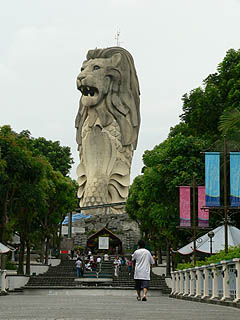
・・・というのはウソで、あまりにもマーライオンの評判が悪いので（世界三大ガッカリ観光地！）巨大化させた胎内巡り型マーライオン像を造ったのである。その大きさたるや37メートル。
シンガポールの人達が本当に尊敬し誇りに思っているかどうかはともかく、こんなカタチのものをここまで大きくしたらそれだけで立派な大仏でしょ。
という訳で伝説の海獣、「マーライオン大仏」様を拝観しに行った。
マーライオン大仏はシンガポールの南端に位置するセントーサ島という島にある。
ちなみにこの島には住民はおらず島全体がひとつの遊園地のようなノリになっている。
島内にはホテルやリゾート施設、水族館や昆虫館などがあり、遊び場の少ないシンガポールの人々と観光客の金の落とし処となっている。
ちなみにアジア大陸最南端の地だそうです。
で、件のマーライオンである。
島内は高低差があり、意外と近くまで行かないと見えて来ない。木々の間からマーライオンが見えて来た時にはその大きさに唖然とした。
しかも頭の天辺に人がいるじゃないか！
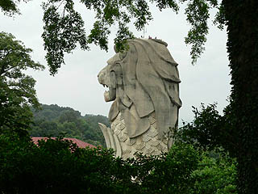 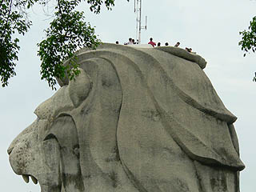
マーライオンの足元が入口になっている。早速チケットを買い中に入る。
内部は洞窟風の造りになっていてマーライオンの由来が説明されていた。
で、お次はシアター。
シンガポールのマーライオン伝説のお話を一通り見る。シンガポールはマーライオンに祝福された土地だから素晴らしいんだ、的なオチ。
穿った見方をすればシンガポールがマレーシアから独立した正統性を得るためのプロパガンダ的な映画だったように思える。
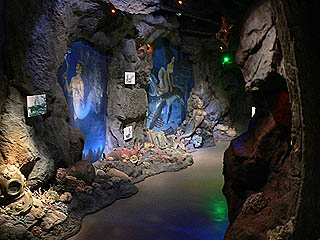 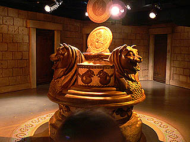
シアターを見たらエレベーターホールの前に変なマシンが。
これは入場券と一緒にコインを貰うのだが、そのコインをここに入れるとカードが出てくる。で、そのカードを出口で見せるとささやかなプレゼントが貰えるというシステムになっているようだ。
で、いよいよエレベーターに乗って胎内巡りである。
エレベーターは一気に10階に登る。
降りるとそこは胎内空間だ。鉄骨がむき出しで装った感じがなくていい。
鉄骨の間を縫うように通路が設けられている。その通路を登って行く。
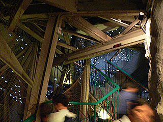 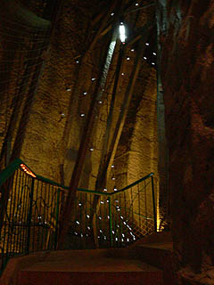
内壁にはたくさんの電球が埋め込まれている。
これは後に気付くのだがマーライオンのウロコの部分を縁取ったもので夜になるとライトアップされるようだ。
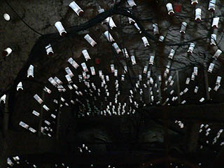 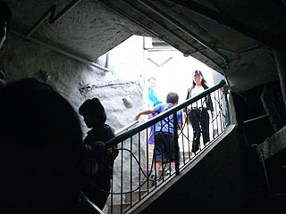
で、階段を登ると頭の天辺の展望台に出る。
展望台は見晴しが良くシンガポールの街が一望出来る。
こうして眺めると、シンガポールが港町だということが良く判る。
後ろを振り返ればたくさんの船が浮かぶ海が見える。
天気がよくなかったので見えないが、この先はインドネシア、ということになるのだろう。
この島とシンガポール本土を結ぶロープウェイ（恐怖）も見える。
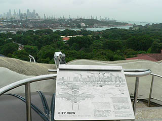 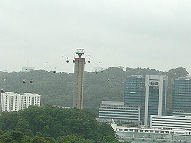
展望台から降りるとそこはマーライオンの口の部分だ。大きく開けた口からは市内が展望出来る。牙が凄いっすね。
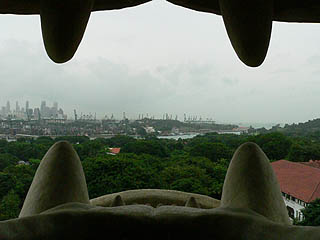 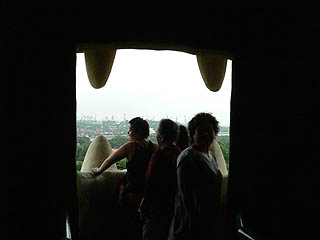
で、またエレベーターに乗って下におりる。
そこは案の定土産屋で、考え得る限りのマーライオングッズが並んでいた。
そして先程のカードをカウンターでささやかなプレゼントと交換する。モノは・・・ささやか過ぎてここでは言えません。
で、マーライオングッズに興味のないワタシはさっさと出口へ。
あれ、1階から10階の間には何があるの？と思われた方も多いかと思うが・・・そこにはマーライオン様の愛が詰まってるんです！
出口は入口とは逆サイド。マーライオンの背中が。
見るとウロコの縁に穴が開いている。先程内側から見た電球が仕込まれている穴だ。
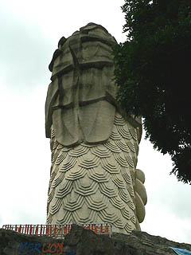 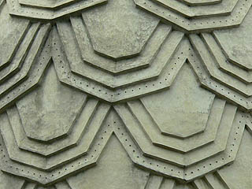
というわけでしばらく時間を潰してライトアップの時間を待つ。
薄暗くなって来ると目と口に明かりが灯った。よ〜く見るとウロコも光っている。おっ、いいぞ。
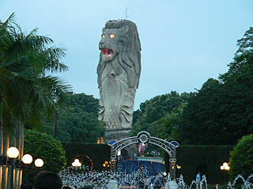 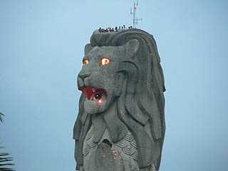
この後、マーライオン前の噴水で噴水ショーが始まり、それにあわせてマーライオンの目からビームが発射されてました。
我が国の大仏も「目からビーム」やって欲しいなあ。
次はマレーシアに飛びます
馬来半島珍寺伝説
珍寺大道場 HOME